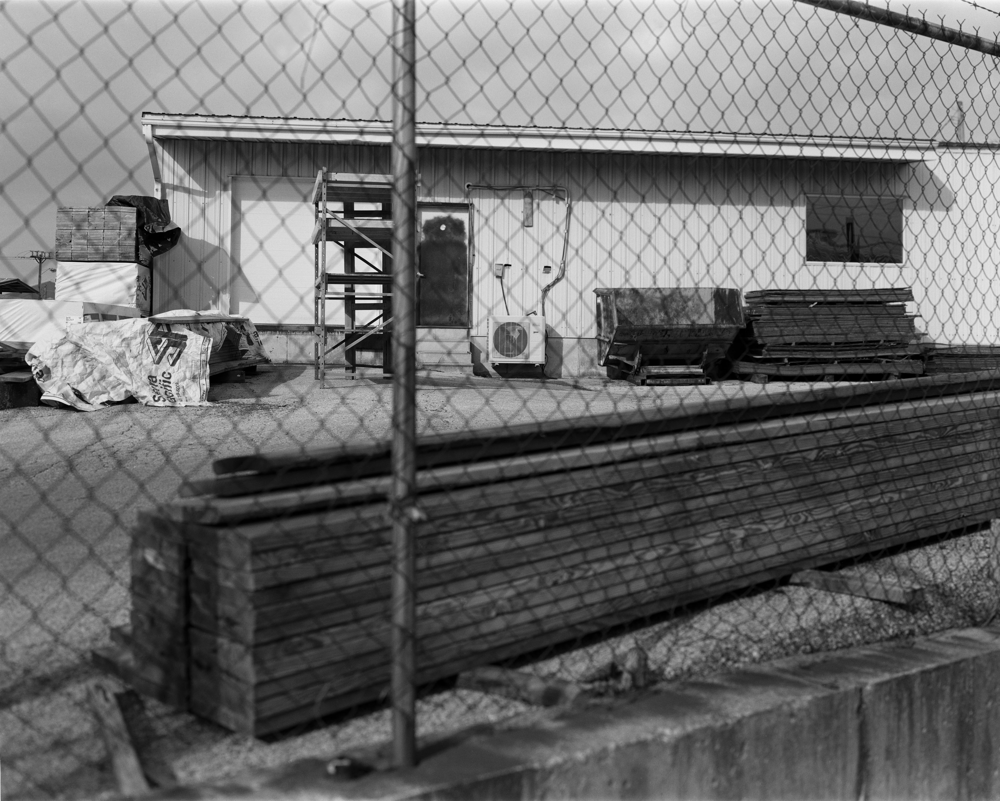

1 / 6
2 / 6

3 / 6

4 / 6

5 / 6
6 / 6

Welcome, all levels of photographers! Learn about what has been created with a camera through past and current artists. And see the possibilities of what you can personally create with your own camera. Hopefully, you shall be insipred to pick up a camera and create some new content.
Azucena Gonzalez also known as Auzzie is currently a student at the University of Missouri-Columbia. Photography is a beloved hobby of hers. She continues to expand her knowledge in photography and experiment with her creativity. She is also majoring in convergence jounalism with an emphasis in multi-media production. And currently a reporter for the Columbia Missourian and working on a long-form journalsim story with a team for Missouri Business Alert.

Comments here Get in touch! xxx-xxx-xxxx